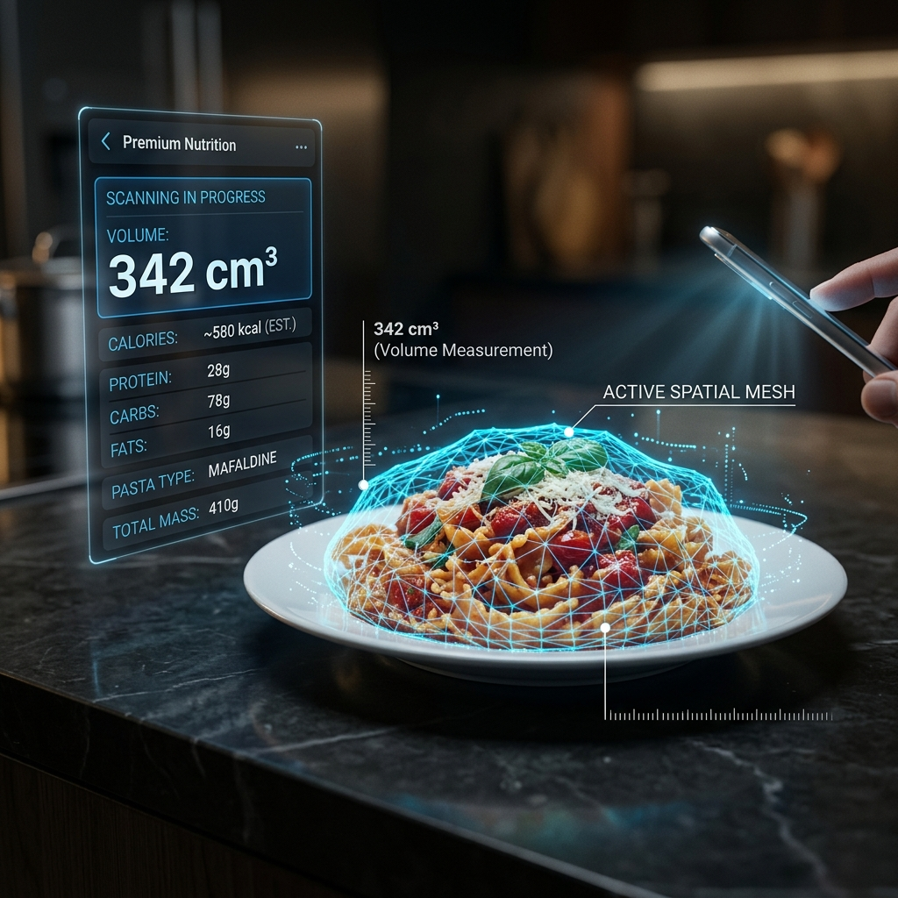

Moving beyond visual guesses with ARCore 3D physics.

Every other calorie tracking app on the market uses simple 2D image recognition. But a photo of a bowl of pasta doesn't tell the AI how deep that bowl is. A 2D photo ignores the 3rd dimension—density and volume.
KkaloAI is the first mobile application to utilize ARCore (Augmented Reality) to map the physical space occupied by your food. By tapping the boundaries of your meal, you create a spatial mesh that allows our Gemini-powered engine to calculate the exact volume in cubic centimeters (cm³).
Accurate portion control is the #1 factor in weight loss success. Most users under-estimate their calorie intake by 30-50% because they misjudge volumes. KkaloAI's 3D scanner eliminates this "human margin of error," providing you with the most reliable data possible on your mobile device.